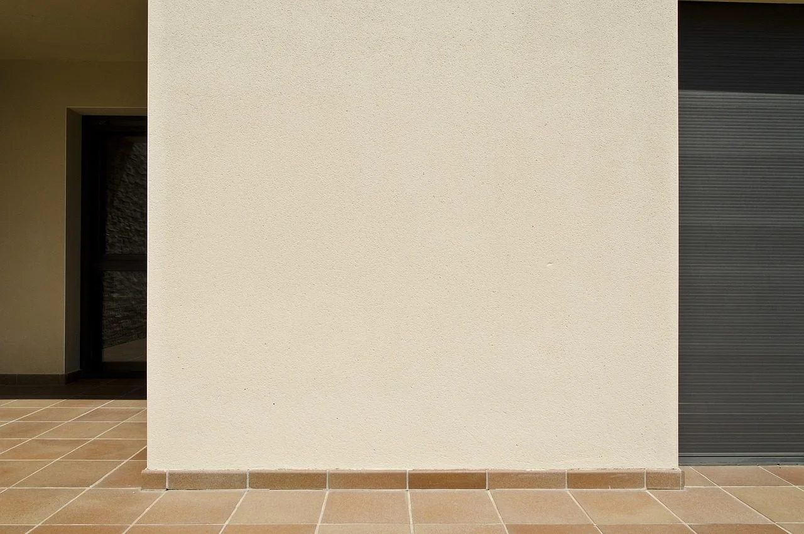

صورة توضيحية — Photo by BRRT on Pixabay
معلم دهانات خارجية نصائح لاختيار الدهان المثالي: 053 116 9312
إذا كنت تبحث عن معلم دهانات خارجية يساعدك في الحصول على واجهة منزل أنيقة ومظهر يعكس ذوقك، فمن المهم أن تختار الدهان المناسب لطبيعة المبنى والظروف الجوية المحيطة به، فالواجهات الخارجية تتعرض باستمرار لأشعة الشمس والغبار والأمطار، مما يجعل اختيار الخامات الملائمة وطريقة التنفيذ الصحيحة من العوامل المهمة للحفاظ على جمال المبنى وتقليل الحاجة إلى الصيانة المتكررة.
ولا يقتصر تجديد الواجهة على تغيير اللون فقط بل يشمل دراسة حالة الجدران وتحديد التشطيب المناسب وتنسيق درجات الألوان مع تصميم المنزل، وفي هذا الدليل نستعرض أهم أنواع الدهانات الخارجية وخصائص البروفايل، وكيفية اختيار الألوان والخامات المناسبة، إلى جانب توضيح الخدمات المعلنة لدى شركة ديكورات الأحلام في الرياض لمساعدتك على اتخاذ قرار مناسب قبل البدء في أعمال التشطيب.
معلم دهانات خارجية
يحتاج طلاء الواجهات إلى اختيار معلم دهانات خارجية دقيق وخامات وتجهيزات مناسبة للأسطح قبل التنفيذ، لأن جودة النتيجة النهائية لا تعتمد على اللون وحده. وعند البحث عن معلم دهانات خارجية، احرص على مراعاة المعايير التالية:
- فحص حالة الواجهة: يجب تحديد أماكن التشققات والتقشر وآثار الرطوبة قبل تطبيق الدهان، حتى لا تظهر العيوب مرة أخرى بعد انتهاء العمل.
- اختيار الخامة المناسبة: تختلف الدهانات الخارجية في تركيبها وملمسها وقدرتها على تحمل الظروف الجوية، لذلك ينبغي تحديد النوع بناءً على طبيعة الجدار.
- تجهيز السطح: يساعد تنظيف الجدران وإزالة الأجزاء المتضررة ومعالجة العيوب في تحسين التصاق الدهان والحصول على تشطيب متجانس.
- تنسيق الألوان: اختر ألوانًا تتناسب مع تصميم المنزل والنوافذ والأبواب والعناصر المعمارية المحيطة بالواجهة.
- الاهتمام بالتنفيذ: يساهم توزيع الدهان بصورة متساوية والالتزام بتعليمات الشركة المصنعة في تحسين المظهر النهائي.
تابع أيضاً: معلم تركيب شيبورد في الرياض: دقة في التنفيذ
أفضل معلم دهانات الرياض
تتنوع الدهانات المستخدمة في الواجهات بحسب طبيعة السطح والمظهر المطلوب والميزانية المتاحة، ولذلك من الأفضل التعرف على أفضل معلم دهانات خارجية وخصائص الأنواع المختلفة قبل تحديد الخيار المناسب لمنزلك:
- دهانات الأكريليك الخارجية: تستخدم في كثير من أعمال طلاء الواجهات، وتتوفر بتركيبات وألوان متعددة، لكن ينبغي اختيار المنتج المخصص للاستخدام الخارجي.
- دهانات السيليكون: تتميز بعض تركيباتها بقدرة جيدة على مقاومة الماء ونفاذية بخار الماء، وتختلف خصائصها وفقًا لمواصفات المنتج.
- دهانات البروفايل: تمنح الجدران ملمسًا بارزًا أو محببًا، وتناسب الواجهات التي يرغب أصحابها في الحصول على تشطيب مختلف عن الدهان الناعم التقليدي.
- الدهانات الأسمنتية المزخرفة: توفر مظهرًا ذا ملمس واضح، ويتوقف اختيارها على نوع السطح ومتطلبات التأسيس وطريقة التطبيق.
ما هي مميزات دهانات البروفايل الخارجي؟
تعد دهانات البروفايل من الخيارات المعروفة في تشطيب واجهات المنازل والفلل، لأنها تجمع بين المظهر المزخرف وإمكانية تنويع الملمس ويعتمد نجاح استخدامها على اختيار المنتج المناسب وتجهيز الجدران وتطبيقه بالطريقة المحددة من الفني المختص.
- تنوع الملمس: يمكن أن يكون التشطيب ناعمًا نسبيًا أو متوسط الخشونة أو أكثر بروزًا، وفقًا لنوع المنتج وأسلوب التنفيذ.
- إخفاء بعض العيوب البسيطة: يساعد الملمس المحبب على تقليل وضوح بعض التفاوتات السطحية، لكنه لا يغني عن إصلاح الشروخ والعيوب الكبيرة.
- مظهر معماري مميز: يمنح البروفايل الواجهة طابعًا مختلفًا، ويمكن تنسيقه مع الألوان الفاتحة أو الترابية بحسب التصميم.
- ملاءمة التصميمات المتنوعة: يمكن استخدامه في واجهات بعض المنازل والفلل والمباني التجارية، بشرط مراعاة متطلبات السطح والمنتج.
اقرأ الآن: معلم دهانات شرق الرياض: احترافية وأسعار مناسبة
أفضل ألوان الدهانات الخارجية للواجهات
يؤثر اللون في الانطباع العام عن المنزل، كما يؤثر في مدى ظهور الغبار وبعض آثار الاستخدام على الجدران، لذلك ينبغي اختيار الفني المختص لينفذ لك اللون بناءً على تصميم الواجهة والبيئة المحيطة وتفضيلات أصحاب المنزل:
- الأبيض والعاجي: يمنحان الواجهة مظهرًا مشرقًا وبسيطًا، ويتناسبان مع كثير من التصميمات الحديثة والكلاسيكية.
- البيج والرملي: يوفران مظهرًا هادئًا ودافئًا، كما ينسجمان مع العناصر الحجرية والخشبية.
- الرمادي الفاتح: يناسب التصميمات العصرية، ويمكن تنسيقه مع الأبيض أو الرمادي الداكن لإبراز تفاصيل الواجهة.
- البني بدرجاته: يتماشى مع الألوان الترابية وبعض التصميمات التي تعتمد على الحجر أو الخشب.
- الألوان الداكنة: تمنح الواجهة مظهرًا قويًا، لكن من الأفضل استخدامها بصورة مدروسة مع مراعاة امتصاص الحرارة وخصائص الطلاء.
كيف تجهز الواجهة قبل الدهان الخارجي؟
تؤثر مرحلة التجهيز بصورة مباشرة في جودة التشطيب، إذ إن تطبيق الدهان على سطح متضرر أو غير نظيف قد يؤدي إلى ضعف الالتصاق أو ظهور عيوب بعد فترة من الاستخدام، ولهذا يجب تنفيذ الخطوات التالية وفقًا لحالة الجدار وتعليمات الفني المختص:
- تنظيف الجدران: إزالة الغبار والأوساخ والدهانات المتقشرة قبل البدء.
- معالجة التشققات: تحديد سبب الشروخ واستخدام مواد إصلاح ملائمة لنوع السطح وحجم الضرر.
- معالجة الرطوبة: التأكد من معالجة مصدر تسرب المياه أو الرطوبة قبل إخفاء آثاره بالدهان.
- تطبيق طبقة التأسيس: استخدام البرايمر المناسب عندما تتطلب مواصفات الدهان ذلك.
- تنفيذ الطبقات النهائية: الالتزام بعدد الطبقات وفترات الجفاف المحددة للمنتج للحصول على تغطية متجانسة.
ما العوامل التي تحدد تكلفة دهان الواجهات الخارجية؟
تختلف تكلفة طلاء الواجهات من مشروع إلى آخر، لذلك لا يمكن تحديد سعر دقيق دون معرفة تفاصيل المبنى والخامات المطلوبة، ومن الأفضل طلب عرض سعر واضح من خلال الفني المختص يبين الأعمال التي يشملها التنفيذ:
- مساحة الواجهة: تؤثر المساحة الإجمالية في كمية الدهان والوقت اللازم للتنفيذ.
- حالة الجدران: قد تتطلب الواجهات القديمة أعمال إصلاح ومعالجة إضافية قبل الطلاء.
- نوع الدهان: تختلف أسعار المنتجات بحسب التركيبة والجودة والملمس والعلامة التجارية.
- ارتفاع المبنى: قد تحتاج الواجهات المرتفعة إلى سقالات أو معدات وصول مناسبة.
- التصميم المطلوب: قد تزيد النقشات والتفاصيل المعمارية من الوقت والجهد اللازمين للعمل.
شاهد أيضًا: معلم دهانات شمال الرياض: خبرة في أرقى الديكورات
كيف تختار معلم دهانات خارجية مناسبًا؟
اختيار الفني المختص المناسب خطوة مهمة للحصول على واجهة متناسقة وتقليل أخطاء التنفيذ، ومن الأفضل التأكد من التفاصيل العملية قبل الاتفاق على بدء المشروع، ولا تجعل السعر الأقل هو العامل الوحيد في قرارك، لأن جودة الخامات والتجهيز والتنفيذ تؤثر جميعها في النتيجة النهائية:
- اطلب صورًا واضحة لأعمال سابقة مشابهة لنوع واجهتك.
- اسأل عن نوع الدهان المقترح وسبب ملاءمته للسطح.
- تأكد من أن عرض السعر يوضح أعمال التجهيز والإصلاح والدهان.
- اتفق على موعد التنفيذ والمدة المتوقعة، مع مراعاة الظروف الجوية.
- اطلب توضيح مكتوب لأي ضمان يعرض عليك، مع معرفة ما يشمله والاستثناءات الواردة فيه.
ديكورات الأحلام لخدمات الديكور في الرياض
إذا كنت تخطط لتجديد منزلك وتبحث عن تنسيق متكامل للتفاصيل الداخلية، فإن شركة ديكورات الأحلام تعلن عبر موقعها عن خدمات متنوعة تشمل الجبس بورد وبديل الرخام وورق الجدران والباركيه والتكسيات الخشبية والشيبورد والديكورات الداخلية وهذه الخدمات مناسبة لمن يرغب في تطوير المساحات الداخلية وإضافة لمسات تتماشى مع ذوقه، وللتعرف على الخدمات المتاحة، يمكنك زيارة الرابط التالي:
- الموقع الإلكتروني: ديكورات الأحلام.
- رقم الاتصال والواتساب: 0531169312
- الموقع: الرياض، المملكة العربية السعودية.
الخاتمة
اختيار الفني المختص مناسب يبدأ بفحص الواجهة وتحديد نوع الدهان الملائم، ثم تجهيز الجدران ومعالجة العيوب واختيار اللون الذي ينسجم مع تصميم المبنى وتساعدك مقارنة الخامات وعروض الأسعار على اتخاذ قرار عملي يجمع بين المظهر الجمالي وجودة التنفيذ والتكلفة المناسبة، وإذا كنت تخطط لتجديد منزلك من الداخل أيضًا، يمكنك الاطلاع على خدمات ديكورات الأحلام المعلنة والتواصل مع الشركة لمعرفة التفاصيل، والأهم هو التأكد من نطاق الخدمة والخامات المتفق عليها قبل بدء العمل حتى تحصل على نتيجة تتوافق مع احتياجاتك وتوقعاتك.
الأسئلة الشائعة
ما هو أفضل دهان للجدران الخارجية؟
يعتمد أفضل دهان للجدران الخارجية على نوع السطح والظروف الجوية والنتيجة المطلوبة، وتستخدم دهانات الأكريليك والسيليكون والبروفايل في تطبيقات مختلفة لكن ينبغي اختيار منتج مخصص للواجهات الخارجية ومناسب لمتطلبات المبنى، مع الاهتمام بتجهيز السطح ومعالجة الرطوبة والتشققات قبل التنفيذ.
ما هي أفضل أنواع البروفايل الخارجي؟
تختلف أنواع البروفايل بحسب التركيبة والملمس وطريقة التطبيق، فمنها تشطيبات ناعمة نسبيًا وأخرى متوسطة أو خشنة ولا يمكن تحديد نوع واحد بوصفه الأفضل لجميع الواجهات، لأن الاختيار يعتمد على تصميم المبنى وحالة الجدار ومواصفات المنتج ومدى ملاءمته للظروف الجوية المحيطة.
ما أفضل ألوان البروفايل الخارجي للمنازل؟
تُعد درجات الأبيض والعاجي والبيج والرملي والرمادي الفاتح من الخيارات المناسبة لكثير من تصميمات المنازل الحديثة، ويفضل اختيار الدرجة التي تتناسق مع النوافذ والأبواب والعناصر المعمارية، مع تجربة عينة على الواجهة قبل اعتماد اللون النهائي للتأكد من شكله تحت الإضاءة الطبيعية.
هل يمكن دهان الواجهة القديمة دون إزالة الدهان السابق؟
يعتمد ذلك على حالة الدهان الموجود ومدى تماسكه مع الجدار فإذا كان الطلاء القديم متقشر أو ضعيف الالتصاق، فيجب إزالة الأجزاء المتضررة ومعالجة السطح قبل تطبيق الدهان الجديد، أما إذا كان متماسك فيمكن تجهيز السطح وفقًا لنوع الطلاء الجديد وتعليمات الشركة المصنعة.
هل تبحث عن تنفيذ احترافي لمشروعك؟
نحن في ديكورات الأحلام نوفر لك أفضل الخامات وأمهر الفنيين في الرياض.
تواصل معنا عبر واتساب